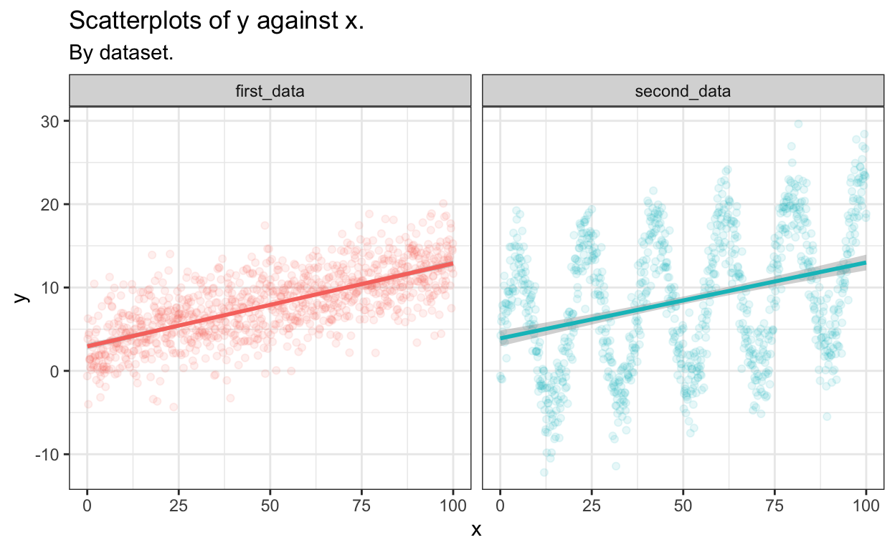

The goal is to propose and estimate a model for explaining a response variable \(Y_i\) from a number of fixed predictors \(x_{i1}, \dots, x_{ik}\).
Mathematically, the model reads:
\[ Y_i = \beta_0 + \beta_1 x_{i1} + \dots + \beta_k x_{ik} + \varepsilon_i, \quad \mbox{with} \quad \mathbb{E}[\varepsilon_i] = 0 \quad \mbox{and} \quad \mathbb{V}\mbox{ar}[\varepsilon_i] = \sigma^2. \]
We can summarize the assumptions on which relies the linear regression model as follows:
Let \(Y_1, \dots, Y_n\) be a sample of \(n\) i.i.d. random response variables with associated observed values \(y_1, \dots, y_n\). We define the so-called design matrix \(\mathbb{X}\) of size \(n \times (k + 1)\) with \(x_{ij}\) at row \(i\) and column \(j\). This allows us to put the model into matrix form:
\[ \mathbf{y} = \mathbb{X} \boldsymbol{\beta} + \boldsymbol{\varepsilon}. \]
Warning: The model is called linear regression not because we necessarily look for a linear relationship between \(Y\) and each \(X_i\) but because it is linear in the \(\boldsymbol{\beta}\) coefficients.
Estimating the model consequently boils down to estimating
This is usually done be minimizing the sum of squared differences between the observed and predicted responses:
\[ \mbox{SSD}(\boldsymbol{\beta}, \sigma^2; \mathbf{y}, \mathbb{X}) := (\mathbf{y} - \mathbb{X} \boldsymbol{\beta})^\top (\mathbf{y} - \mathbb{X} \boldsymbol{\beta}) = \sum_{i = 1}^n (y_i - (\beta_0 + \beta_1 x_{i1} + \dots + \beta_k x_{ik}))^2 .\]
This leads to the following coefficient estimator:
\[ \widehat{\boldsymbol{\beta}} := (\mathbb{X}^T \mathbb{X})^{-1} \mathbb{X}^\top \mathbf{Y}, \]
from which we can define the fitted response:
\[ \widehat{\mathbf{Y}} = \mathbb{X} \widehat{\boldsymbol{\beta}} = \mathbb{X} (\mathbb{X}^T \mathbb{X})^{-1} \mathbb{X}^\top \mathbf{Y} = \mathbb{H} \mathbf{Y}. \]
The matrix \(\mathbb{H}\) is often called the hat matrix or projection matrix or influence matrix. The diagonal terms are such that \(0 \le h_{ii} \le 1\). They are called the leverage score of each observation \((y_i, x_{i1}, \dots, x_{ik}\). Note that the leverage does not depend on \(y_i\) at all but only on the predictor values. Also, with some abuse of notation, we can write:
\[ h_{ii} = \frac{\partial \widehat{Y_i}}{\partial Y_i}, \]
which illustrates the leverage measures the degree by which the \(i\)-th measured value influences the \(i\)-th fitted value.
An unbiased estimator of the constant variance term \(\sigma^2\) is given by:
\[ \widehat{\sigma^2} := \frac{(\mathbf{Y} - \widehat{\mathbf{Y}})^\top (\mathbf{Y} - \widehat{\mathbf{Y}})}{n - k - 1}. \]
We can define the residuals of a fitted linear regression model as the difference between the observed and fitted response values:
\[ \mathbf{e} := \mathbf{y} - \widehat{\mathbf{y}} = (\mathbb{I}_n - \mathbb{H}) \mathbf{y}. \]
As a result, we still do have \(\mathbb{\mathbf{e}} = \mathbf{0}\) but we no longer have residuals with constant variance because \(\mathbb{V}\mbox{ar}[e_i] = \sigma^2 (1 - h_{ii})\) and residuals are not uncorrelated anymore since \(\mbox{Cov}(e_i, e_j) = -h_{ij}\), for \(i \ne j\).
Standardized residuals are a way of estimating the error for a particular data point which takes into account the leverage/influence of the point. These are sometimes called internally studentized residuals
\[ r_i := \frac{e_i}{s(e_i)} = \frac{e_i}{\sqrt{\widehat{\sigma^2} \left( 1 - h_{ii} \right)}}. \]
The motivation behind standardized residuals is that even though our model assumed homoscedasticity with an i.i.d. error term with fixed variance \(\varepsilon \sim \mathcal{N}(0, \sigma^2)\), the distribution of the residuals \(e_i\) cannot be i.i.d. because the sum of residuals is always exactly zero. In fact, \(\mbox{Cov}(\mathbf{e}) = I - H\).
Studentized residuals for any given data point are calculated from a model fit to every other data point except the one in question. This is variously called the externally studentized residuals, deleted residuals or jackknifed residuals.
This sounds computationally difficult (it sounds like we would have to fit one new model for every point) but in fact there’s a way to compute it from just the original model without refitting using the standardized residuals \(r_i\):
\[ t_i := r_i \left( \frac{n - k - 2}{n - k - 1 - r_i^2} \right)^{1/2}, \]
where \(n\) is the total number of observations and \(k\) is the number of predictors used in the model.
The motivation behind studentized residuals comes from their use in outlier testing. If we suspect a point is an outlier, then it was not generated from the assumed model, by definition. Therefore it would be a mistake - a violation of assumptions - to include that outlier in the fitting of the model. Studentized residuals are widely used in practical outlier detection.
Studentized residuals also have the desirable property that for each data point, the residual follows a Student’s t-distribution, if the normality assumption of the original regression model is met.
Cook’s distance \(D_i\) of observation \(i\) (for \(i = 1, \dots, n\)) is defined as a normalized version of the sum of squared differences between the fitted values obtained by including or excluding that observation:
\[ D_i := \frac{ \sum_{j = 1}^{n} \left( \widehat{y}_j - \widehat{y}_j^{(-i)} \right)^2}{\widehat{\sigma^2} (k+1)}, \] where \(\widehat{y}_j^{(-i)}\) is the fitted response value obtained when excluding observation \(i\). Interestingly, it can be expressed in terms the leverage scores and the standardized residuals in a quite simple form:
\[ D_i = \frac{r_i^2}{k+1} \frac{h_{ii}}{1-h_{ii}}. \]
This last equation shows that there are two phenomena that affect the value of \(D_i\):
Notes:
Cook’s distance does not help in the above two situations, but it does not really matter, because, in both cases, we can safely include the corresponding observation into our regression.
The most important and first thing you should do before any attempt to modeling is to take a look at your data.
Let us generate two data sets: one for which things will go well and one for which things will go sideways. The following code produces the desired data sets, put them together into a tidy tibble and visualize them:
set.seed(1234)
n <- 1000 # sample size
x <- seq(0, 100, length.out = n)
first_data <- 3 + 0.1 * x + rnorm(n, sd = 3)
second_data <- 3 + 0.1 * x + 10 * sin(x / 3) + rnorm(n, sd = 3)
mod1 <- lm(first_data ~ x)
mod2 <- lm(second_data ~ x)
full_data <- tibble::tibble(x, first_data, second_data) %>%
tidyr::pivot_longer(cols = -x, values_to = "y")
full_data %>%
ggplot(aes(x, y, col = name)) +
geom_point(alpha = 0.1) +
geom_smooth(method = "lm") +
facet_grid(cols = vars(name)) +
labs(
title = "Scatterplots of y against x.",
subtitle = "By dataset."
) +
theme_bw() +
theme(legend.position = "none")
set.seed(1234)
n <- 1000 # sample size
x <- seq(0, 100, length.out = n)
first_data <- 3 + 0.1 * x + rnorm(n, sd = 3)
second_data <- 3 + 0.1 * x + 10 * sin(x / 3) + rnorm(n, sd = 3)
mod1 <- lm(first_data ~ x)
mod2 <- lm(second_data ~ x)As you can see, both data sets seem to generate the same linear regression predictions, although we already clearly understand which one will go sideways…
Let us go deeper now. If one really want to fit a linear regression model to explain y in terms of x in both situations, you can use the function lm() that does all the computations for you as illustrated in the code chunk above.
Before going into the syntax and the content of the lm() function, remember that, even though R facilitates computations, it does not verify for you that the assumptions required by the model are met by your data!
This is where model diagnosis comes into play. You can almost entirely diagnose your model graphically. Using the grammar of graphics in ggplot2, this can be achieved using the extension lindia, that you can also find by borwsing ggplot extensions. In particular, the function lindia::gg_diagnose() shows the relevant plots for diagnosis all at once.
Let us diagnose the first model:
Let us now diagnose the second model: